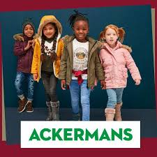
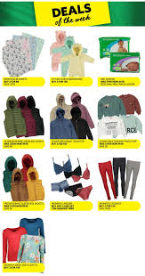
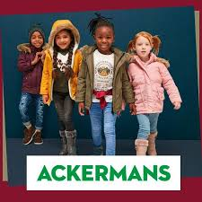
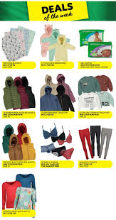

ACKERMANS
Ackermans is a South African chain of clothing retail stores. Founded in 1916 in Wynberg, Cape Town, Ackermans has over 700 stores across Southern Africa, including in Namibia, Botswana, Lesotho, Swaziland and Zambia, and is headquartered in Kuilsriver near Cape Town. In 2015 Ackermans is rated the second best clothing store by the South African Consumer Satisfaction Index.Our purpose at Ackermans is: Bringing Value to Life, and it lies at the heart of everything we do, whether it's to the lives of our customers and employees, or to the wider community and value retailing as a whole. The secret to our success is simple - people.